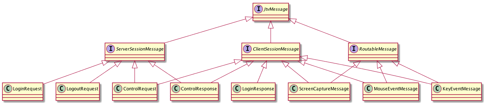

本文是Jtv的开发笔记。Jtv是一个远程桌面工具。
协议
为实现远程控制，我们需要处理两类通讯，客户端与服务器的通讯、客户端与客户端的通讯。
客户端与服务端的通讯主要有：
-
登录：客户端发送登录请求后，由服务端进行认证，并分配会话ID。
-
连接申请类：客户端创建新连接，通过这个连接发送连接申请，这个连接是源连接。服务端需要将这一申请转发给目标客户端，目标客户端接收到消息后，创建新连接至服务端，这个连接是目标连接。服务端在源连接与目标连接间建立绑定关系后，两个客户端间就可以实现点对点的通讯了。
客户端与客户端的通讯消息主要有以下几类：
-
文本消息传输：如错误信息，连接关闭通知等。
-
屏幕画面消息：被控端以一定的频度获取屏幕画面，并将它传输至控制端。控制端将其绘制到控制窗口中。
-
鼠标键盘事件：控制端在控制窗口中查看被控端画面，针对该画面操作的键盘和鼠标事件需要被传递到被控端，被控端根据这些事件进行事件的回放。
消息对象
为满足上述通讯要求，我们需要定义一套用于消息传输的对象。
//消息
sealed trait JtvMessage
//服务端处理的会话消息
trait ServerSessionMessage extends JtvMessage
//客户端处理的会话消息
trait ClientSessionMessage extends JtvMessage
//服务端路由转发的消息
trait RoutableMessage extends JtvMessage
//远程控制消息
//case class ControlMessage() extends JtvMessage
case class ScreenCaptureMessage(val image:Array[Byte], val originWidth:Int, val originHeight:Int) extends RoutableMessage with ClientSessionMessage
case class MouseEventMessage(val id:Int,val x:Int,val y:Int,val button:Int,val wheelRotation:Int, val screenWidth:Int, val screenHeight:Int) extends RoutableMessage with ClientSessionMessage
case class KeyEventMessage(val id:Int,val keyCode:Int) extends RoutableMessage with ClientSessionMessage
case class ErrorMessage(val message:String) extends RoutableMessage with ClientSessionMessage
//登录
case class LoginRequest(val username:String,val password:String) extends ServerSessionMessage
case class LoginResponse(val result:Boolean,val message:String,val sessionId:Int,val sessionPassword:String) extends ClientSessionMessage
case class LogoutRequest(val sessionId:String) extends ServerSessionMessage
//请求控制
case class ControlRequest(val targetSessionId:Int,val targetSessionPassword:String,val sourceSessionId:Int,val sourceChannelId:Option[String]) extends ServerSessionMessage with ClientSessionMessage {
/*def this(targetSessionId:Int,targetSessionPassword:String,sourceSessionId:Int){
this(targetSessionId,targetSessionPassword,sourceSessionId,None)
}*/
}
case class ControlResponse(val result:Boolean,val message:String,val sourceSessionId:Int,val sourceChannelId:String) extends ServerSessionMessage with ClientSessionMessage
object JtvMessage{
def apply(bufferedImage: BufferedImage): ScreenCaptureMessage = {
val width = bufferedImage.getWidth
val height = bufferedImage.getHeight
val newWidth = 960
val ratio = width/newWidth
val newHeight = height*ratio.toInt
val resizedImage = ImageUtils.resizeImage(bufferedImage,newWidth,newHeight)
val bos = new ByteArrayOutputStream()
ImageIO.write(resizedImage,"png",bos)
ScreenCaptureMessage(bos.toByteArray,width,height)
}
def apply(inputEvent: InputEvent,screenWidth:Int,screenHeight:Int): JtvMessage = {
inputEvent match {
case m:MouseWheelEvent => MouseEventMessage(m.getID,m.getX,m.getY,m.getButton,m.getWheelRotation,screenWidth,screenHeight)
case m:MouseEvent => MouseEventMessage(m.getID,m.getX,m.getY,m.getButton,0,screenWidth,screenHeight)
case m:KeyEvent => KeyEventMessage(m.getID,m.getKeyCode)
case _ => throw new RuntimeException("事件类型错误")
}
}
}
这此类的关系如下：

我将消息分为三类：
-
ServerSessionMessage: 服务端处理的消息
-
ClientSessionMessage: 客户端处理的消息
-
RoutableMessage: 服务端负责路由的消息，即客户端间通讯的消息，服务端不做处理，只进行转发。
这些消息分类并不是绝对的，像ControlRequest这样的消息即要由服务端处理，也需要由被控的客户端接收处理。这些分类主要是为了能方便的进行消息类型判断。
网络层
为满足消息数据的传输，我们需要使用netty来完成下面这些任务：
-
自定义一套对象编码/解码器，处理消息数据的序列化和反序列化
-
自定义一套消息帧机制，处理tcp包粘包/拆包操作
-
编写服务端和客户端的
Handler
数据帧
由于Tcp协议只能保证消息的有序性，并不能保证消息的接收能与发送保持一致。因此，需要处理所谓的粘包和拆包。即，发送端需要将数据封装成数据帧格式，每个数据帧的头部记录下版本号、帧类型、帧长度和帧内容。接收端则需要按帧的格式进行读取，在处理帧读取时利用netty自带的一些工具，能达到事半功倍的效果。
我们将数据帧及其工厂类，定义为JtvFrame类和单例对象。类用于保存数据帧的数据，单例对象负责将JtvMessage对象转化为数据帧对象。
//数据帧
object JtvFrameType extends Enumeration {
type JtvFrameType = Value
val KEY_EVENT ,MOUSE_EVENT,SCREEN_CAPTURE,LOGIN_REQUEST,LOGIN_RESPONSE,CONTROL_REQUEST,CONTROL_RESPONSE,ERROR_MESSAGE,LOGOUT_REQUEST,UNKNOW = Value
}
import JtvFrameType._
class JtvFrame(val version:Int, val msgType:JtvFrameType, val sessionId:Int, val contentLength:Int, val content:Array[Byte])
object JtvFrame{
private val logger = Logger(JtvFrame.getClass)
var sessionId = 0
val version = 1
def apply(jvtMessage: JtvMessage): Option[JtvFrame] = {
val msgType = jvtMessage match {
case _:ScreenCaptureMessage => SCREEN_CAPTURE
case _:MouseEventMessage => MOUSE_EVENT
case m:KeyEventMessage => KEY_EVENT
case _:LoginRequest => LOGIN_REQUEST
case _:LoginResponse => LOGIN_RESPONSE
case _:ControlRequest => CONTROL_REQUEST
case _:ControlResponse => CONTROL_RESPONSE
case _:ErrorMessage => ERROR_MESSAGE
case _:LogoutRequest => LOGOUT_REQUEST
case _ => UNKNOW
}
Try(CodecUtils.encode(jvtMessage)) match {
case Success(arr) =>Some(new JtvFrame(version,msgType,sessionId,arr.length,arr))
case Failure(e) => {
logger.error(s"消息转换失败：${jvtMessage}",e)
None
}
}
}
}
JtvFrame类中最重要的两个字段是contentLength和content。分别代表消息内容长度和被序列化的消息。后面进行拆包时依赖于这两个字段，才能读取到完整的数据包。
编码器和解决码器
如前面所述，我们需要两套编码/解码器，分别处理数据帧和消息对象。
数据帧的编码和解码
帧编码器
它主要负责将帧数据发送至网络通道：
class JtvFrameEncoder extends MessageToByteEncoder[JtvFrame]{
override def encode(ctx: ChannelHandlerContext, msg: JtvFrame, out: ByteBuf): Unit = {
out.writeInt(msg.version)
out.writeInt(msg.msgType.id)
//out.writeInt(msg.sessionId)
val sessionId = ChannelUtils.getSessionId(ctx.channel())
out.writeInt(sessionId.getOrElse(0))
out.writeInt(msg.contentLength)
out.writeBytes(msg.content)
}
}
帧解码器
继承netty提供的ReplayingDecoder能较方便的定义帧解码器。这个Decoder是为方便拆包而定义的，我们只需要提供一套状态代码，并根据读取的数据情况，推进状态就能实现拆包处理了。如果没有这个工具，我们就得根据接收的数据长度来处理缓冲区数据，这个操作繁琐且容易出错。
object JtvFrameDecodeState extends Enumeration{
type JtvFrameDecodeState = Value
val VERSION,MSGTYPE,SESSIONID,CONTENTLENTH,CONTENT = Value
}
import JtvFrameDecodeState._
class JtvFrameDecoder extends ReplayingDecoder[JtvFrameDecodeState]{
var version,contentLength:Int=_
var sessionId:Int = _
var msgType = JtvFrameType.LOGIN_REQUEST
var content:Array[Byte]=_
def reset: Unit ={
state(VERSION)
version = 1
msgType = JtvFrameType.LOGIN_REQUEST
sessionId = 0
contentLength = 0
content = Array[Byte](0)
}
reset
override def decode(ctx: ChannelHandlerContext, in: ByteBuf, out: util.List[AnyRef]): Unit = {
def decode: Unit = state() match {
case VERSION => {
version = in.readInt()
checkpoint(MSGTYPE)
decode
}
case MSGTYPE => {
msgType = JtvFrameType(in.readInt())
checkpoint(SESSIONID)
decode
}
case SESSIONID => {
sessionId = in.readInt()
/*val currentSessionId = ChannelUtils.getSessionId(ctx.channel())
currentSessionId match {
case Some(sId) => {
if(sId != sessionId.toString){
ctx.channel().writeAndFlush(new ErrorMessage("会话ID不一致!"))
ctx.channel().close()
return
}
}
case None => ChannelUtils.setSessionId(ctx.channel(),sessionId)
}*/
checkpoint(CONTENTLENTH)
decode
}
case CONTENTLENTH => {
contentLength = in.readInt()
checkpoint(CONTENT)
decode
}
case CONTENT => {
content = ByteBufUtil.getBytes(in.readBytes(contentLength))
out.add(new JtvFrame(version,msgType,sessionId,contentLength,content))
reset
return
}
case _ => {
reset
ctx.close()
throw new Exception("Unknown decoding state: " + state())
}
}
decode
}
}
编写编码器的时候，使用了scala的模式匹配来进行状态检查，根据状态来确定所读取的帧字段。由于scala的模式匹配不能像Java的switch那样从上向下执行（不添加break的情况下），因此我们需要在每次匹配之后，重复调用decode以读取后续的字段数据，直到完成content字段的读取。
读取完content字段的数据后，就可以构建出完整的JtvFrame对象了。这个更对象添加至out集合并返回后，将会被更上层的消息对象解码器解码为消息对象。
消息对象的编码和解码
简单起见，消息对象的编码和解码我直接使用Java对象序列化机制。
class JtvMessageDecode extends MessageToMessageDecoder[JtvFrame]{
override def decode(ctx: ChannelHandlerContext, msg: JtvFrame, out: util.List[AnyRef]): Unit = {
out.add(CodecUtils.decode(msg.content))
/*msg match{
case obj:JtvMessage => out.add(obj)
case _ => None
}*/
}
}
class JtvMessageEncode extends MessageToMessageEncoder[JtvMessage]{
override def encode(ctx: ChannelHandlerContext, msg: JtvMessage, out: util.List[AnyRef]): Unit = {
JtvFrame(msg) match {
case Some(m) => out.add(m)
case _ => None
}
//out.add()
}
}
Pipeline
定义完编码和解码器之后，需要将它们添加至netty的Pipeline中：
bootstrap.group(bossGroup,workerGroup)
.channel(classOf[NioServerSocketChannel])
.childHandler(new ChannelInitializer[NioSocketChannel] {
override def initChannel(ch: NioSocketChannel): Unit = {
val pipeline = ch.pipeline()
pipeline.addLast("frameDecoder",new JtvFrameDecoder())
pipeline.addLast("frameEncoder",new JtvFrameEncoder())
pipeline.addLast("messageDecoder",new JtvMessageDecode())
pipeline.addLast("messageEncoder",new JtvMessageEncode())
pipeline.addLast(new ServerHandler())
}
})
编码/解码器的工作时序如下：

Comments